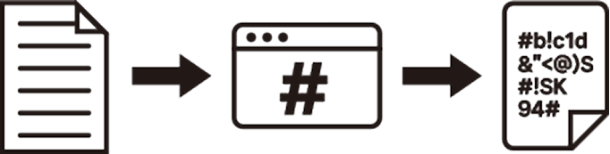

개념 학습
단방향 암호화의 적용 사례
단방향 암호화를 적용한 대표적인 사례를 살펴보자.
해시 함수와 해시값
해시 함수는 다양한 길이의 입력 데이터를 고정된 길이의 해시값으로 변환하는 단방향 함수이다.
이로 인해 비밀번호와 같은 중요한 정보를 안전하게 저장할 수 있으며, 입력값이 조금만 변경되어도 완전히 다른 해시값이 생성된다.
예를 들어, SHA-256은 블록체인에서 거래 정보를 보호하는 데 사용된다.
해시값은 입력값이 조금만 바뀌어도 완전히 다른 결괏값이 나오기 때문에 해시값으로는 원래의 입력값을 예측할 수 없다.

평문
해시 함수
해시 값
보충 영상